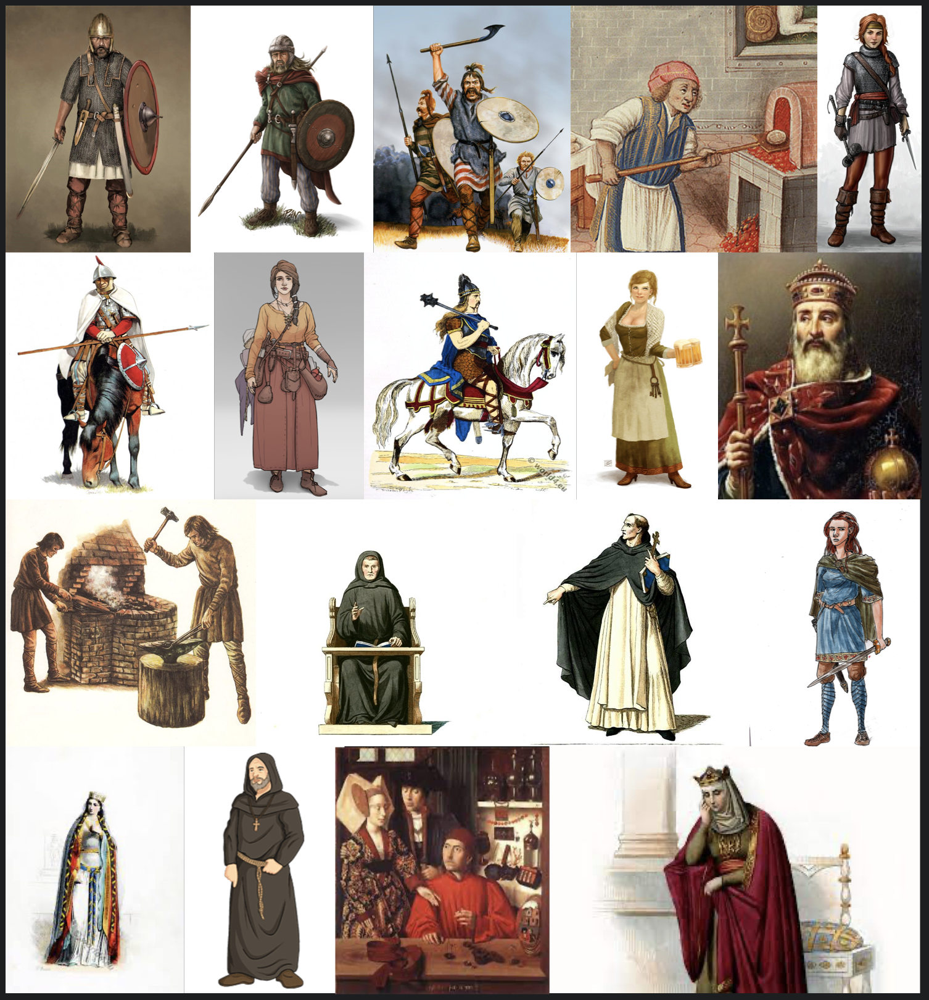

You blink and find yourself on a grassy, windswept hill overlooking the northern Atlantic sea. A magical interface appears before you with a list of options.
Welcome to the Kingdom of the Francs. The date is 550 AD. Known as one of the few times civilization regressed, the trifecta of famine, disease, and roving tribes have destroyed the Western Roman Empire. After the volcanic eruptions of 536 blocked out the sun and plunged the world in famine, the plague of Justinian wiped out 40% of the remaining population in the resulting chaos.
The political situation is also tumultuous—despite King Chlothar 'the old' defeating his brothers and unifying the Kingdom of the Francs, he is ailing and his sons are scheming for control. The Catholic Church is split between the Nicene orthodoxy and Arianism, with much zealous preaching of end-times.
Your Herculean task is to stop the decline, restart the engine of progress, and uplift society. To do this, you are granted a number of supernatural skills.
You start on the coast near Rouen.
Points Available: 20
Points Spent: 0
Challenge Points: 0
Immediate Benefits
Make your introduction into the past easier
All-speak
Know all languages by default
1 Point
Carry-along
Brought your backpack with 3 books of your choice in it
1 Point
Not hungry
You need to eat and drink 1/4 of normal to be satiated
1 Point
Med-kit
Contains a full set of first aid and first response items
1 Point
I live in a box
You arrive inside a storage container full of IKEA furnishings of your choice
1 Point
Armed
You arrive with Kevlar armor and a pistol. 12 rounds of ammo only.
2 Points
Over yonder
Although you may act and look different to locals, they will assume you are from a nearby city by default
2 Points
Inflation helps
Coverts your pocket change to the local currency. Gives you the equivalent of $50,000 in cash to spend
2 Points
Guide
A friendly local shepherd who will take you in until you get on your feet
2 Points
Modern Knowledge
With perfect clarity, you have modern knowledge of a topic
Medicine
Theories of sanitation, germs, diseases, hygiene, and allergies. Also history of penicillin, aspirin, lidocaine, forceps, pasteurization, and surgery.
Summaries of findings in physics, math, chemistry, biology, and political science.
3 Points
Supernatural Skills
The first knight
You have the skills of a trained knight—skilled in swordsmanship, archery, and horse riding. Comes with a trained warhorse.
3 Points
Strength in dark times
You gain superhuman endurance, able to march all day. You need just three hours of sleep to be fully refreshed.
3 Points
Many faces
You can pick ten human appearances to switch between. This is a true transformation. Be warned, doing this is public is a good way to be accused of being a witch.
5 Points
Light-fingered
Greatly enhanced dexterity and body control, bordering on superhuman. Good for fighting or lifting a purse or two.
3 Points
Eyeglasses
These glasses (very rare in this time), grant you the ability to see a brief bio of anyone, including their lord, patron, hometown, and personal history.
2 Points
Holy-one
You gain a natural holy charisma that makes it much easier to convince people you are a prophet. Also gains ability to transform water into wine in small quantities.
4 Points
Noble bearing
You appear to be an exiled noble from a distant land. Anyone you meet will believe this backstory if you offer it.
4 Points
Crafty
You gain a natural ability to tinker, allowing you to build devices with limited tools.
4 Points
More time, please
You gain an extra forty years of natural lifespan. Does not make you immune to being killed by disease or other people.
3 Points
Media matters
You remember with perfect clarity all works of fiction, plays, music, and paintings you have seen. You can recreate them if you'd like.
2 Points
More allies
Pick up to three more allies from the list.
3 Points
Aware
Your senses are enhanced and you have a danger-sense that warns you of impending physical conflict.
3 Points
Hearthstone
You can set your current location as 'home'. If you focus for a few seconds, you can teleport to this location from anywhere.
3 Points
Hygiene
You are always clean and well-groomed. You also gain immunity to diseases.
4 Points
Challenges
Pick additional challenges to gain extra points
Hunted
Chlothar (King of Francs) believes you slept with one of his wives and has ordered his spies to find and kill you.
+3 Points
Heretic
The Catholic Church is split between the Nicene orthodoxy and Arianism. Both sides believe you are a missionary of the other faith and can't be convinced otherwise.
+3 Points
New Religion
You must design and spread a new religion, gaining at least 50 coverts within ten years. If you fail, lose 10 points of abilities.
+3 Points
Guild drama
The guilds of Francia see you as a threat to their monopoly of their trades. They will try to oppose you with gridlock, bribes, and even put a bounty on your head.
+2 Points
Friendless
Don't select any allies.
+2 Points
Winter
Arrive in a snowstorm.
+1 Point
Combat
Within the first five years of arriving, you must take part in combat.
+1 Point
Non-combatant
Avoid any physical confrontation for first ten years. If attacked, can only try to escape.
+1 Point
Allies
Pick up to 3 allies to support you

Selected: 0/3
Gregory of Tours
Tours
Background: Born into a noble family, he is a historian and devout believer in Nicene Christianity. Currently a priest, he is on track to become a bishop in the future.
Personality: Deeply religious but academic
Skillset: Able to support you in religious affairs and has connections to many Frankish nobles.
Radegund
Poitiers
Background: Born a princess of Thuringia, when Chlothar conquered the land he took her as his wife. A religious woman, she focused on almsgiving much to Chlothar's annoyance. When he had her brother killed (last heir of Thuringia), Radegund fled to the Church and persuaded the Bishop of Noyon to ordain her, allowing her to found a monastery for the infirm.
Personality: Radegund was known for her ascetic behavior and has been described as an "extreme ascetic". She followed a vegan diet and abstained from wine, mead and beer.
Skillset: She will provide you will a breakdown of the royal court, support from her abbey, and correspondence on church matters. She also is well-known by the people and her support has influence.
Brunhilda
Her entourage is traveling to Paris when you encounter her
Background: A Visigoth princess, the younger of the two daughters of Athanagild and Goiswintha. She was educated in Toledo as an Arian Christian. She is set to be wed to Chlothar's son Sigebert.
Personality: Known for her education and forceful personality, she aims to have influence at court.
Skillset: She might give you an in with the King or advise you on politics.
Alcuin
Nearby abbey
Background: Young Nicene monk from an abbey nearby. He is literate in Latin and a diligent copier of older texts.
Personality: Bookish but easy-going
Skillset: He would make a great administrator
Ramigil
Tavern in nearby town
Background: Mercenary fighter originally from Alamati tribe
Personality: Gruff and rowdy, a veteran who doesn't shy from danger
Skillset: Fighting, tactics, and drinking
Meriwig
Nearby city
Background: Daughter of a wealthy merchant, pestered her father and now runs a lot of his business behind the scenes
Personality: Curious and ambitious
Skillset: Contacts in business, literate, strong accountant, good at math
Adald
Patrol nearby
Background: Noble bastard who became a knight
Personality: Lawful good—believes in a life of duty, honor, and charity
Skillset: Good fighter, good trainer
Wulmar
Town square nearby
Background: A fire-and-brimstone Arian preacher, he travels from town to town to speak and convert
Personality: Zealous and charismatic but surprisingly practical
Skillset: Good at conversions, good at escaping the law when Nicene forces run him out of town
Theoda
Nearby city
Background: A baker's daughter
Personality: Sweet and diligent
Skillset: Good baker, cook, and good at making friends
Narduin
Nearby city
Background: Blacksmith
Personality: Town joker, always ready with a clever joke
Skillset: Armor, weapons, horseshoes, and other smith work
Marcian
Paris
Background: Byzantine merc
Personality: Stoic and professional
Skillset: Fighting, training men-at-arms, and an experienced logician
Bertrude
Treves (city)
Background: Leader of co-fraternity in Treves (this is like a guild but organized with church support)
Personality: Charismatic and a networker
Skillset: Organization, managing egos, advocating for his workers
Irene
Paris
Background: Byzantine craftswoman whose family fled during the plague. She and her old uncle are the only ones who survived the trip, so she set up a jewelry shop.
Personality: Entrepreneurial and savvy
Skillset: Running a business, educated, and worldly
Eadmod
On the road between two cities
Background: Traveling tinker for metal, brother of Rowena
Personality: Clever and opportunistic
Skillset: Good bargainer, able to make devices and repair equipment
Rowena
On the road between two cities
Background: Traveling tinker for cloth, sister of Eadmod
Personality: Mediative and laid back
Skillset: Knows many cloth techniques, well traveled
Stadius
Frontier with Germany
Background: Roman missionary
Personality: Not specified
Skillset: Not specified
Otton
Paris
Background: Tutor of lords, he is brought in to teach nobles etiquette, literature, and academics
Personality: Arrogant and detail-focused
Skillset: Well educated teacher, lots of contacts with nobility
Richomer
Nearby city
Background: Skilled mason
Personality: Dreams of building a castle, imaginative
Skillset: Knows medieval techniques for stone building
Grifo
Nearby city
Background: Glass worker
Personality: Cares deeply about precision and quality of his work
Skillset: Knows glass techniques and has taken apprentices before
Gerald
Nearby city
Background: Horse trader from Anglo-saxon England
Personality: Loves chasing a good deal and unafraid of conflict
Skillset: Bargainer of great skill, knows how to evaluate and train horses
Sigburta
Nearby town
Background: After her husband died young, she now runs the local tavern
Personality: Admired and sought after for her beauty and tavern, she has developed a hardened shell
Skillset: Running a tavern means knowing how to handle money, hire and train staff, and prepare food and rooms